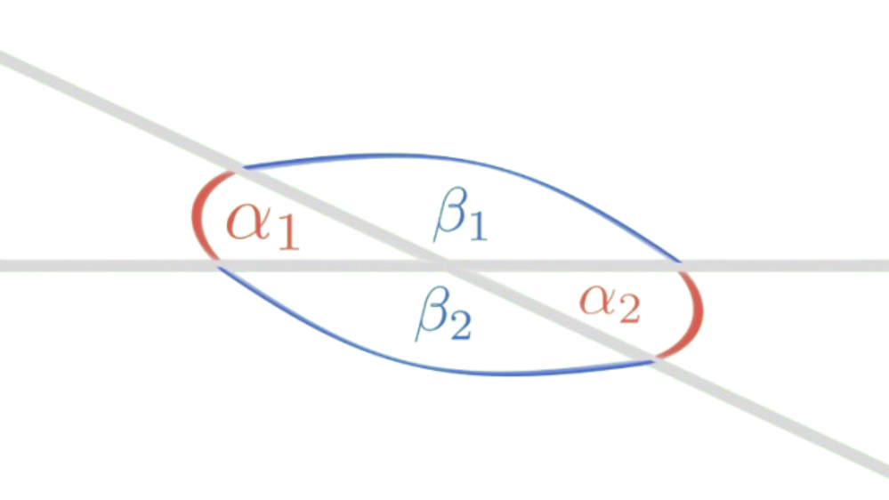
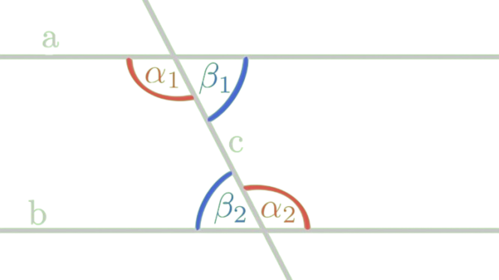
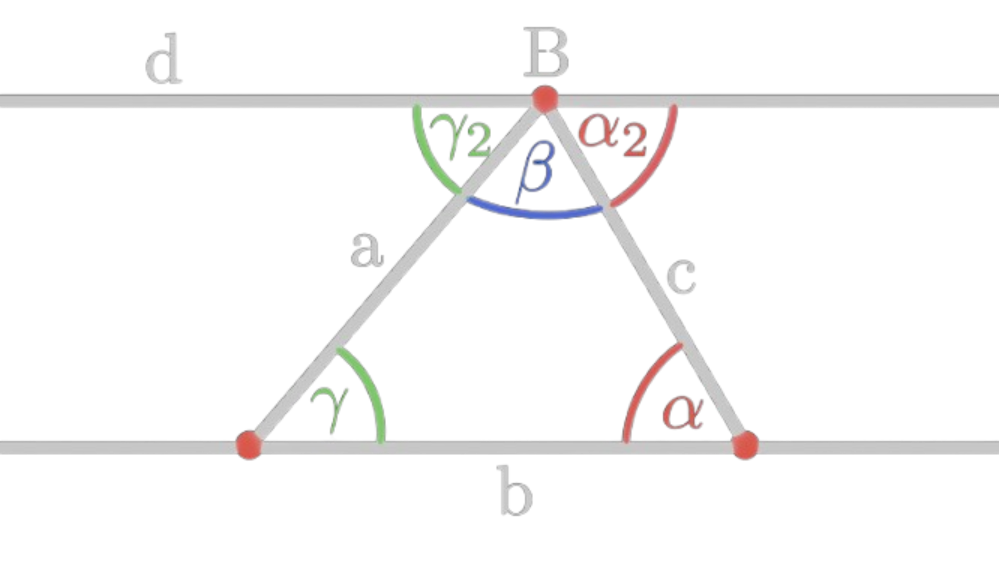
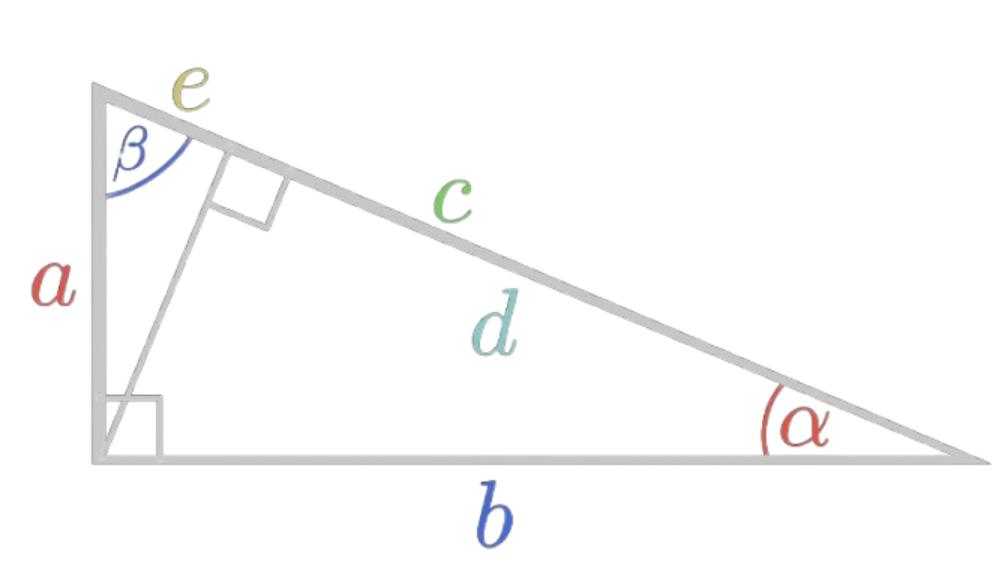

Assuming the knowledge up to where this proof should've been covered.

From elementary geometry → Geometry of triangles.
Proof outline: Show that the angles in a triangle add up to 180° by showing that the alternate angles of a line falling across two parallel lines
are equal.
Theorem 1: The vertically opposite angles of two straight-lines which intersect each other are equal.
\(Proof:\)
Consider one side of a line and the angles it forms with the other line. A full rotation is 360°,
and since a line cuts the plane it lies in into two parts, on either side of the line the angle formed by itself
is a straight angle, so 180°. Now consider two of these straight angles by both lines.
We can split them up into angles \(\alpha_1, \alpha_2, \beta_1\, \beta_2\). Notice that \(\alpha_1 +\beta_1 = 180°\)
and \(\alpha_2 + \beta_1 = 180°\), and things equal to something are equal to each other, so
\(\alpha_1 +\beta_1 = \alpha_2 + \beta_1\). Notice that we have \(\beta_1\) on both sides, so we can subtract it
from both sides of the equation to get \(\alpha_1 = \alpha_2\). Using the same argument we can prove that
\(\beta_1 = \beta_2\). \(\square\)

Theorem 2: When a straight line intersects two parallel lines it causes the alternate angles to be equal.
\(Proof:\)
Let a, b be two parallel lines intersected by the straight line c, and alternate angles
\(\alpha_1, \alpha_2, \beta_1, \beta_2\) (see right side), so we're trying to prove that \(\alpha_1 = \alpha_2\).
Start by assuming the contrary, that \(\alpha_1 \neq \alpha_2\). Since they're not equal
one of them must be larger. Take \(\alpha_1\) to be the larger angle. Since \(\alpha_2 + \beta_2 = 180°\),
then \(\alpha_1 + \beta_1 > 180°\) which is impossible, therefore \(\alpha_1\) must be equal to \(\alpha_2\).
From here, it is trivial to prove that \(\beta_1 = \beta_2\). \(\square\)

Theorem 3: The sum of angles in a general triangle is 180°.
\(Proof:\)
Let a triangle have sides a, b, c and angles \(\alpha, \beta, \gamma\).
Construct a line d that is parallel to the base b through B and extend b.
The lines a and c intersect the two parallel lines b and d, so their alternate angles are equal.
Call the angles at d: \(\alpha_2, \beta, \gamma_2\). So: \(\alpha_2 + \beta + \gamma_2 = 180°\).
Furthermore, they are alternate angles, so, due to theorem 2, \(\alpha = \alpha_2, \gamma = \gamma_2\).
Therefore, the sum of the angles \(\alpha + \beta + \gamma = 180°\). \(\square\)

Proof setup
Theorem 4: In a right-angled triangle with legs \(a, b\) and hypotenuse \(c\): \(a^2 + b^2 = c^2\).
Proof:
The two smaller triangles, one containing \(\beta\) and the other containing \(\alpha\), are similar to the larger triangle
because they all have two common angles. From rules of similarity we get:
\[
\frac{b}{c} = \frac{d}{b} \:\:\:\: \text{and} \:\:\:\: \frac{a}{c} = \frac{e}{a} \\
\]
Multiplying the left equation by both b and c and the right equation by a and c we get:
\[
b^2 = cd \:\:\:\: \text{and} \:\:\:\: a^2 = ce \\
\]
Now if we add \(a^2\) and \(b^2\) together we get:
\[
a^2 + b^2 = cd + ce \\
a^2 + b^2 = c(d+e) \\
a^2 + b^2 = c^2 \:\:\:\:\:\:\:\: \square
\]
Theorem 5: The set \( \{x \in \mathbb{R} \mid 0 < x < 1 \} \) is uncountably infinite.
Proof: Let's try to find a one-to-one correspondence, and if we can't do so then the set of real numbers between 0 and 1
and therefore the set of \(\mathbb{R}\) is uncountably infinite.
Match every natural number with a random number between 0 and 1.
\[
\begin{array}{|c|c|}
\hline
\mathbb{N} & \{x \in \mathbb{R} \mid 0 < x < 1 \} \\
\hline
1 & 0.853287523876... \\
2 & 0.153890271523... \\
3 & 0.458327957215... \\
4 & 0.999912346789... \\
5 & 0.792837465473... \\
\cdots & \cdots \\
\cdots & \cdots \\
\cdots & \cdots \\
\end{array}
\]
This list is infinite so it should have all numbers, however let's construct another number that isn't to be found in this list.
Let's do this by changing the first digit of the number in our given list by 1, either +1 if its 0-8 or -1 if its 9.
If we do this with our given list we'd get 0.96984... . Notice that this new number we constructed will be
different from the first number by the first digit, from the second number by the second digit and so on, meaning that
this number we constructed on the interval (0, 1) however nowhere to be found in our list. We can construct
infinitely many of these numbers which are nowhere to be found in our list, so this must mean
that there are more real numbers between 0 and 1 than the natural numbers. Therefore \( \{x \in \mathbb{R} \mid 0 < x < 1 \} \) and
\(\mathbb{R}\) is uncountably infinite. \(\square\)